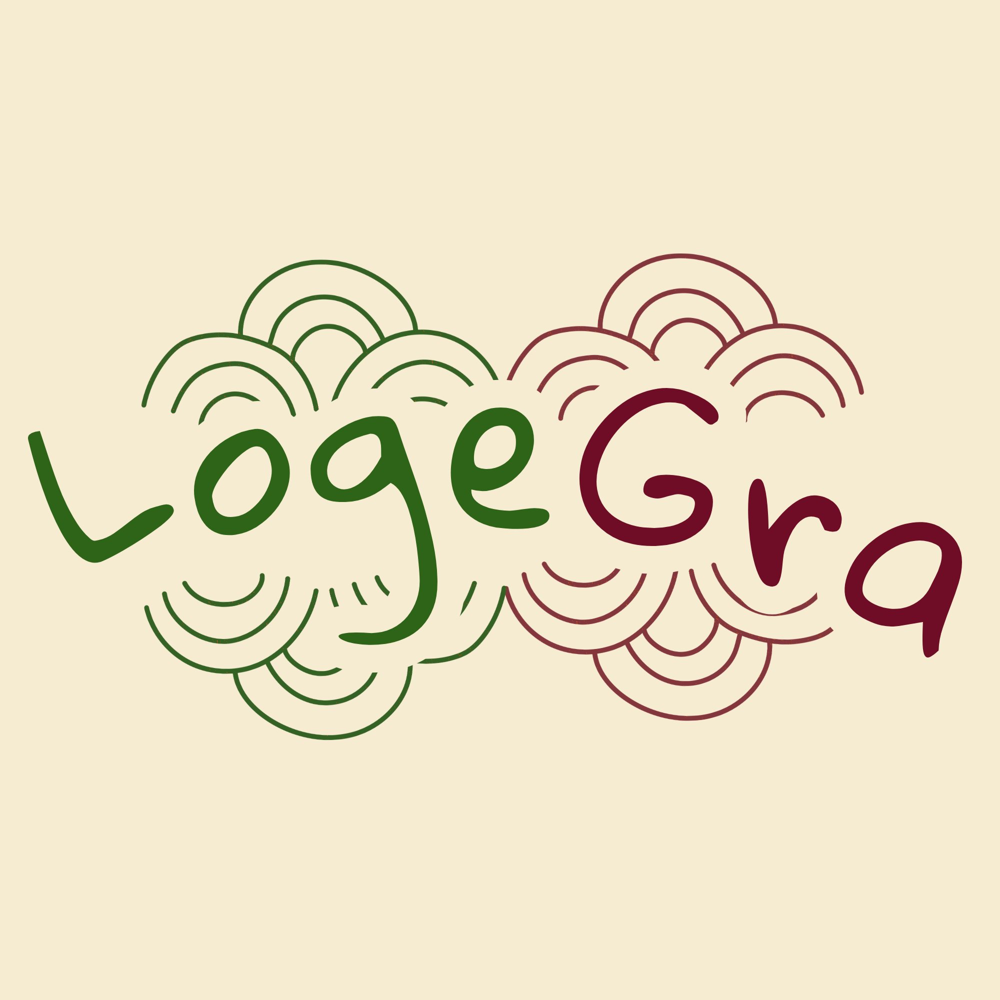

LogeGra, la recherche de logement à Garoua simplifiée
Enjeu
Garoua regorge d’opportunités de logement, mais les trouver reste souvent une affaire de bouche à oreille. Logegra rapproche les personnes à la recherche d’un toit des offres disponibles, à travers une expérience simple et intuitive.
Stack technique
- HTML5
- CSS3
- JavaScript
- Google Sheets
- Google Apps Script
Résultat
MVP disponible en ligne.
